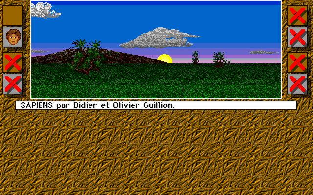
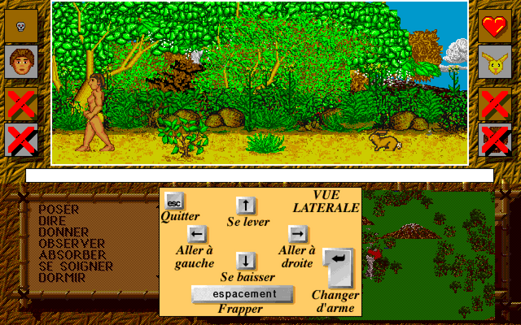
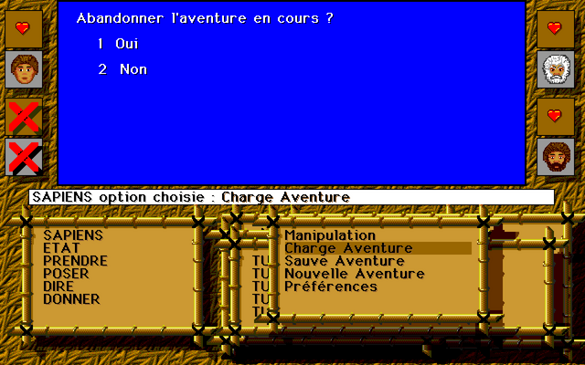

Le jeu
Vous êtes Torgan, jeune chasseur des Pieds-Agiles. Vous parcourez une vaste vallée en vue subjective : montagnes, forêts, sources, nuages et orages. Le jour succède à la nuit, la faim, la soif et la fatigue vous rongent. Vous croisez loups, ours, lapins et des hommes d'autres tribus : il faut alors combattre, en vue latérale, à la hache, à la sagaie ou à mains nues… ou bien parler, échanger des cadeaux et se faire des alliés.
Taillez le silex pour fabriquer vos armes, ramassez des baies et des racines, soignez vos blessures, dormez près du feu. Ici, la ruse et la diplomatie valent souvent mieux que la force.



La quête
Hognor, le chef de votre tribu, vous confie des épreuves de plus en plus difficiles :
- Rapporter des vivres : la tribu a faim.
- Obtenir la Potion de Vie des Yeux-Malins, car les jeunes ont mangé des baies vénéneuses.
- Relever le défi des Bras-de-Roc : vaincre leur chef et lui voler la Hache d'Ivoire.
- Reprendre le Bâton Sacré dérobé par les Hyènes-Folles.
- Et enfin… que la loi de la force désigne le nouveau chef.
Pieds-Agiles
Votre tribu. Chef : Hognor.
Yeux-Malins
Rusés guérisseurs. Chef : Sl-Oom.
Bras-de-Roc
Guerriers redoutés. Chef : Grungh.
Hyènes-Folles
Pillards du Sud. Chef : Krok-G.
Commandes
Ordinateur
- Souris
- Choisir une action dans les menus du bas (flèches ▲▼ pour faire défiler), cliquer sur l'image pour observer
- ← →
- Paysage : tourner · vue latérale : marcher
- ↑ ↓
- Paysage : accélérer / ralentir · vue latérale : se relever / s'accroupir
- Espace
- Paysage : carte · vue latérale : frapper
- Entrée
- Changer d'arme (ou clic droit)
- Échap
- Quitter la vue (ou clic)
- Pavé num.
- Second joueur (8246, 1 frapper, 3 arme)
Mobile
- Toucher
- Comme un clic de souris : tout le jeu se joue avec les menus (Regarder › Paysage pour partir explorer)
- Joystick
- Bande de gauche : tourner, avancer (paysage), marcher (vue latérale)
- FRAPPER
- Vue latérale : frapper · paysage : carte
- ARME
- Vue latérale : changer d'arme
- SORTIR
- Quitter le paysage ou la vue en cours (un toucher sur l'image aussi)
- CARTE
- La carte dans le paysage
Une longue histoire
- 1986 — Première version, écrite en assembleur pour les Thomson MO5 et TO7/8/9 et l'Amstrad CPC, puis réécrite en C pour le PC.
- 1987 — Version plus colorée pour l'Atari ST.
- 1996 — Les sources C sortent des cartons : version pour MacOS et Windows.
- 2017 — Sapiens passe en freeware.
- 2018 — Myriad publie les sources sous licence GNU GPL v3.
- Aujourd'hui — Portage en PHP, jouable dans le navigateur.
100 % PHP
Cette version est un portage fidèle, fonction par fonction, des sources C de 2018 vers PHP, sur le framework JumPHP. Le même code tourne sur ordinateur (PHP + SDL2) et dans le navigateur (PHP compilé en WebAssembly). Les sprites, les sons et les textes sont ceux du jeu original.
Code source : github.com/davidnurdin/sapiensPhp · sources originales : la page Sapiens open source de Myriad.